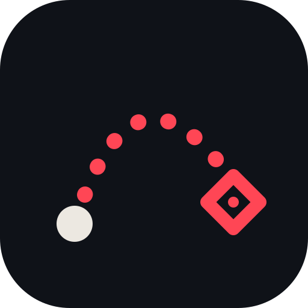

บุก รับ ● จุดยืน → ไอคอน = จุดที่สกิลตก
ใส่ token ครั้งเดียวต่อเครื่อง แล้วกดบันทึก lineup จะขึ้น GitHub ให้เอง (มือถือเห็นใน 1–2 นาที)
token เก็บในเบราว์เซอร์เครื่องนี้เท่านั้น ไม่ได้ส่งเข้า repo ใช้ได้แค่ repo ที่เลือก · ถ้าเครื่องหายหรือให้คนอื่นยืม ให้ลบ token ที่ github.com/settings/personal-access-tokens
คุณกำลังแก้บนมือถือ — ข้อมูลจะเก็บอยู่แค่ในเครื่องนี้ ถ้าจะให้ทุกเครื่องเห็นต้อง export แล้ว push จากคอม
บันทึกแล้วจะเก็บในเบราว์เซอร์เครื่องนี้ก่อน (รวมรูป) กด “ส่งออก” จะได้ไฟล์ zip ที่มี lineups.json + รูป เอาไปแตกในโฟลเดอร์ repo แล้ว push เพื่อให้ทุกเครื่องเห็น